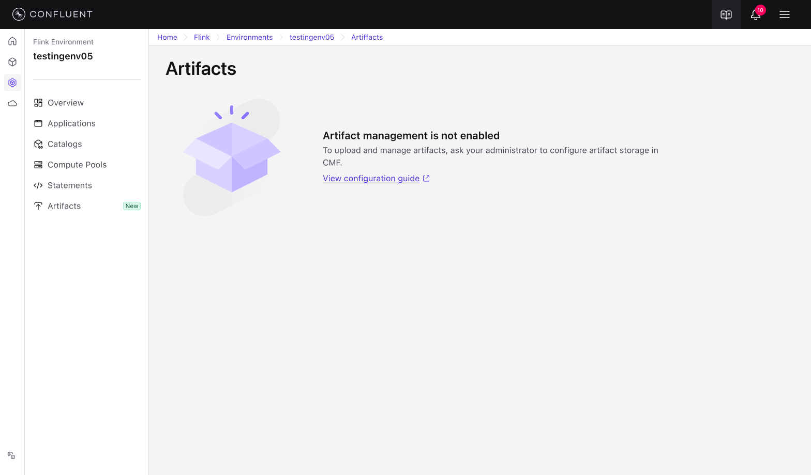

Context & Problem
Dual Persona Solution

Dell the Lead Developer 👨💻
Dell needs to deploy custom Flink JAR applications without building Docker images—uploading artifacts via UI and referencing them in deployment specs. He wants to help his backend engineering team ship high-quality products without wrestling with container infrastructure.

Omar the Operator 📊
Omar needs to manage artifact storage (blob storage configuration), monitor artifact integrity (checksums), enforce security policies (who can upload/delete), and troubleshoot deployment issues when artifacts are missing or corrupted. Both personas require a seamless, UI-driven workflow that eliminates CLI dependencies mandated by enterprise security policies.
Current Pain Points
- Customers must build custom Docker images containing Confluent's Flink distribution + their JAR files
- OR provide JARs via external storage (volume mounts, S3) with manual configuration
- OR define init container/sidecar to fetch artifacts into shared volume mount inside pod
Customer Perspective
OCC (Oracle Cloud) explicitly requested this feature. Their internal security policies prohibit CLI tools, making artifact upload via UI critical. Other highly regulated industries have similar constraints.

Future SQL UDF Support
Additionally, future Flink SQL will require mechanism for users to provide JAR/Python files for custom UDFs and connectors. Artifact management provides this foundation.